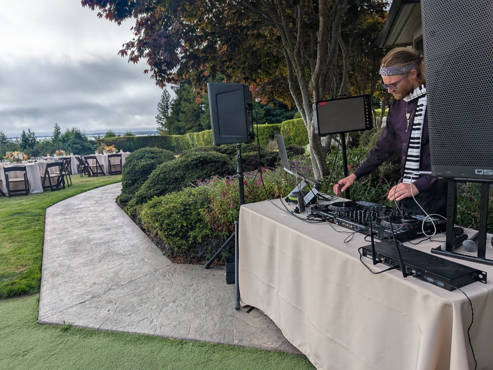

Full-service sound, lighting, and staging production, plus DJ performance — built on 10+ years of touring and festival experience, serving Humboldt County, CA.

Full-service sound, lighting, and staging for venues, planners, bands, and fellow performers across Humboldt County.
See services & pricing →Weddings, private parties, and festival sets, played by a working touring audio technician who also happens to be a DJ.
See packages & pricing →Kieran Edward James Specht has spent 10+ years in professional live production — from South Bay Los Angeles stages to festival lots with 8th Day Sound, working with artists like Beyoncé, My Chemical Romance, Anderson .Paak, and RÜFÜS DU SOL. Now based in Arcata, he brings that same festival-grade experience to local venues, weddings, and events.
Read the full story →Tell us about your event and we'll follow up with availability and a custom quote.
Start your inquiry